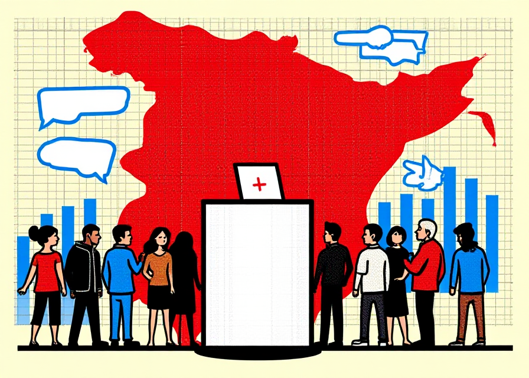

Especial · Elecciones 2026
100 propuestas
para España
Un test ilustrado para decir qué te importa y comparar después tus prioridades con las de los demás. Ni partidos, ni trampas: solo ideas para debatir.

Elige si quieres 20 preguntas o las 100. Responde «de acuerdo», «en desacuerdo» o «no lo tengo claro». Al final verás tus prioridades.
No pedimos nombre, correo ni registro. Tu progreso y tus favoritos se quedan en este dispositivo.
Contenido divulgativo y ficticio. Las propuestas son ejemplos para debatir, no el programa de ningún partido ni un pronóstico electoral.
La pieza
El vídeo
Aquí va el vídeo de noticias ilustradas. Si aún no está incrustado, pega el enlace de YouTube y se guardará en este dispositivo.
Pega abajo el enlace de YouTube (o coloca el archivo en web/video/video.mp4 antes de compilar la APK).
Participa
El test
Lee cada propuesta y elige una respuesta. Puedes volver atrás; nada se envía.
¿Cuántas preguntas?
01 / 20
Teclas 1, 2 y 3 para responder · ← para volver
Tu fotografía
Resultado
Así se reparten tus respuestas por bloque temático.
—
—
Tus prioridades
Te convencen
No te convencen
El catálogo
100 propuestas
Búscalas, filtra por bloque y guarda tus favoritas con el corazón.